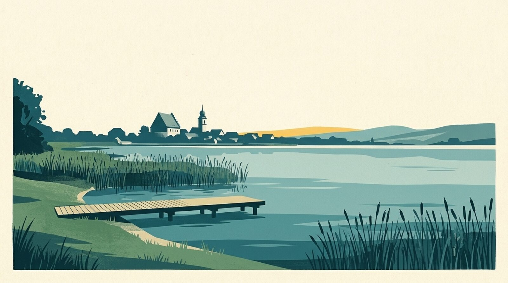
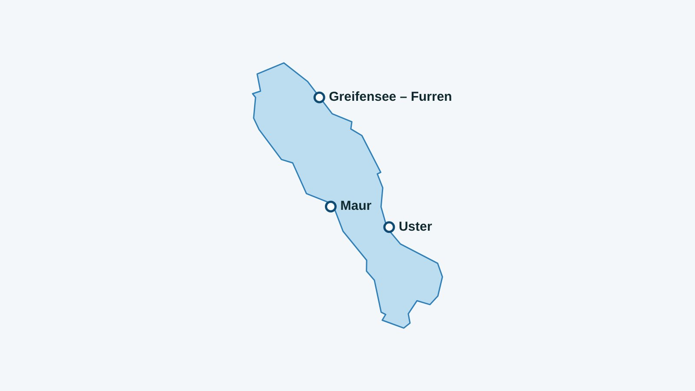

In breve
Il mio lago segue 3 spiagge del Greifensee, con la temperatura dell’acqua a 70 cm sotto la superficie dove è calcolata. Ecco l’elenco, poi gli indirizzi utili in riva all’acqua.

Il Greifensee copre circa 8,45 km², scende fino a 32 m e si trova a 435 m di altitudine.
Le 3 spiagge seguite del Greifensee
Tra parentesi: la temperatura del mattino del 13 novembre 2026, a 70 cm sotto la superficie (modello Alplakes).
- Maur (11,7 °C)
- Uster (11,7 °C)
- Greifensee – Furren (11,7 °C)
Ingresso, stagione e accesso
Prezzi e date rilevati il 13 novembre 2026 dalle fonti qui sotto, per la stagione 2026: da verificare sul sito di ogni bagno prima di andare.
- Furren: piccolo bagno gratuito con spogliatoi, servizi, doccia fredda e griglia (badi-info.ch).
- Strandbad Uster: stagione 2026 dal 9 maggio; ingresso adulti 6,50 franchi, 3,50 franchi dai 6 anni; dalle 9 alle 20.30 a maggio, fino alle 19 a settembre.
- Strandbad Maur: ingresso gratuito da luglio 2026. In un avviso del 23 giugno 2026 il comune dice che il gestore non può più garantire né l’esercizio né la sorveglianza dei bagni: la situazione può essere cambiata da allora, da verificare con il comune.
Un drink o un pasto in riva al Greifensee
- Restaurant Schifflände, Maur: Seestrasse 31: terrazza self-service e ristorante in riva al lago, proprio alla fermata di treno, bus e tram.
Da leggere anche
L’acqua del lago in questo momento
La temperatura dell’acqua di ogni spiaggia è nell’app Il mio lago, aggiornata ogni tre ore.